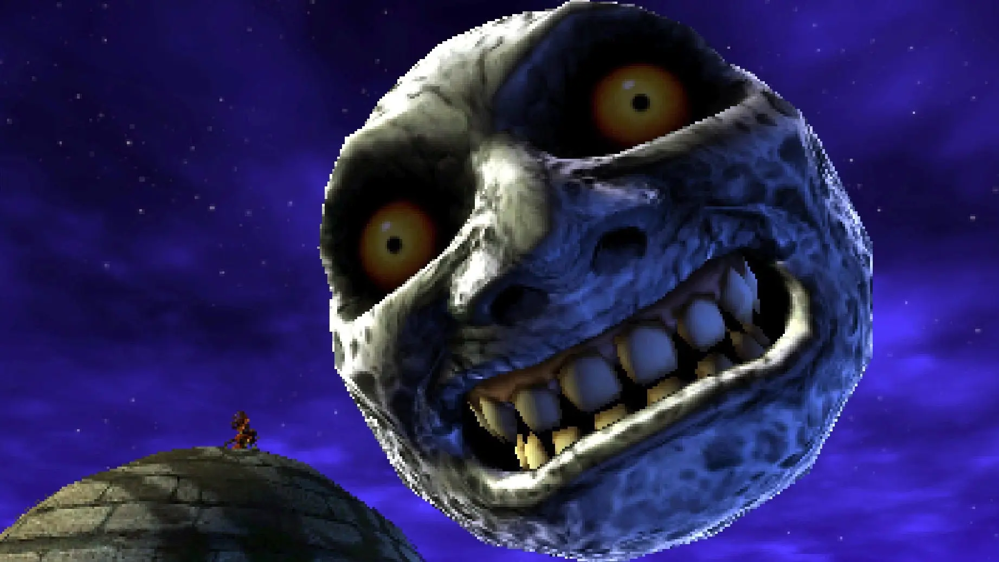

Capitulo 1 En este capítulo, Link, en busca de su amiga Navi, se encuentra en el Bosque Maldito y es atacado por Skull Kid, quien roba su Ocarina y lo transforma en un Deku Scrub. Link debe buscar una manera de recuperar su forma humana.
Capítulo 2 Link adquiere la Máscara Deku, que le permite explorar el Bosque de Termina. Luego, obtiene la Máscara Goron y la Máscara Zora, que le permiten acceder a otras áreas de Termina: las Montañas de Goron y la Gran Bahía.
Capítulo 3 Link descubre que la Luna está a punto de chocar con Termina en tres días. Para detener esta catástrofe, Link debe completar las tres pruebas temporales y aprender canciones que le permitan controlar el flujo del tiempo.

Capitulo 4 Link aprende sobre los cuatro gigantes que pueden detener la caída de la Luna. Debe despertarlos en las cuatro esquinas de Termina antes del Día de la Aniquilación.
Capítulo 5 Link y Tatl, el hada de Skull Kid, llegan al Jardín del Observatorio donde se encuentra Skull Kid. La historia de Skull Kid y su relación con los Cuatro Gigantes se revela.
Capítulo 6 Link, con la ayuda de los Cuatro Gigantes, se enfrenta a Majora's Mask y evita la caída de la Luna. Después de la batalla, Skull Kid es perdonado y Link parte en busca de Navi

Capitulo 7 "Majora's Mask" es conocido por su atmósfera oscura y su enfoque en temas como la pérdida y la muerte, lo que lo hace un juego único en la serie "Zelda".
El juego introduce un sistema de tres días, donde el tiempo avanza constantemente. Los eventos y personajes siguen horarios específicos, lo que crea una sensación de urgencia en el juego.
Existen más de 20 máscaras diferentes que Link puede usar, cada una con sus propias habilidades y efectos.
Capítulo 8 Una de las canciones más icónicas del juego es la "Canción del Inverso" (Song of Inverted Time), que permite a Link cambiar la dirección en la que avanza el tiempo, lo que influye en la dinámica del juego.
Capítulo 9"Majora's Mask" ha ganado un seguimiento de culto a lo largo de los años y se considera uno de los juegos más originales y desafiantes de la serie "Zelda".
La máscara de Majora ha aparecido en otros juegos de "The Legend of Zelda" y se ha convertido en un símbolo icónico de la serie.
Espero que esta división en capítulos y los datos curiosos te proporcionen una visión más completa de la historia y el impacto de "The Legend of Zelda: Majora's Mask".